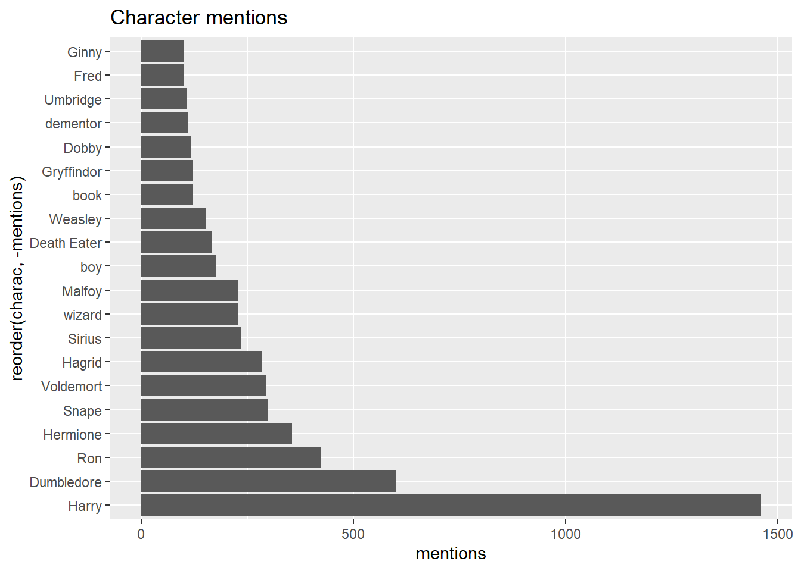

hpd <- fromJSON(file="en_train_set.json")
extracted_dialogue <- map(hpd, pluck, "dialogue")
session_names <- rep(names(extracted_dialogue),
times = sapply(extracted_dialogue, length))
dialog_tb <- str_split_fixed(string = tibble(
dialogue = unlist(extracted_dialogue)
)$dialogue,
pattern = ':',n=2) |>
as_tibble() |>
mutate(session = session_names,
V1 = str_trim(V1)) |>
select(session, charac = V1, dialog = V2)Welcome to our latest exploration in the world of data science. Following our previous discussions on machine learning models, we now delve into the fascinating realm of text analysis using R. In this post, we’ll apply various R packages to analyze character dialogues from a fictional dataset. Our goal is to uncover insights such as the most mentioned characters, frequent greetings, and the characteristics of dialogues. Let’s dive into the script and interpret our findings.
Understanding the Dataset
We have a JSON file containing dialogues from different sessions, aquired here . To extract meaningful insights, we first load and process the data using tidyverse and tidytext packages in R. The dataset is a treasure trove of dialogues, each offering a unique glimpse into the interactions between characters.
Data Preparation and Exploration With our data loaded, we proceed to clean and structure it for analysis. We utilize functions like str_split_fixed to separate the dialogues into character names and their corresponding lines. This meticulous process sets the stage for deeper analysis, allowing us to delve into the intricacies of each dialogue.
Insights from the Data
-
Most Mentioned Characters: We quantify the presence of each character in the dialogues. By counting mentions, we identify the characters that dominate the conversations, offering insights into their importance or prominence in the narrative.
character_mentions <- sapply(unique(dialog_tb$charac), function(char) { sum(str_detect(dialog_tb$dialog, fixed(char))) }) # Creating a data frame for the results mentions_df <- data.frame(charac = unique(dialog_tb$charac), mentions = character_mentions) |> filter(charac != "hat") # Displaying the results mentions_df |> arrange(desc(mentions)) |> slice(1:20) |> ggplot(aes(y = reorder(charac, -mentions), x = mentions)) + geom_bar(stat = 'identity') + ggtitle('Character mentions')
-
Frequent Greetings: The essence of initial interactions is captured by analyzing common greetings like “Hello”, “Hi”, and others. This reveals the nature of interactions and the formality or informality within the dialogues.
greetings <- c("Hello", "Hi", "Greetings", "Hey") # Extracting greetings from dialogues greetings_found <- sapply(greetings, function(greet) { unlist(str_extract_all(dialog_tb$dialog, fixed(greet))) }) # Displaying the results lapply(greetings_found,length)$Hello [1] 41 $Hi [1] 147 $Greetings [1] 0 $Hey [1] 41 -
What’s the longest dialogue?
# Calculating the length of each dialogue dialog_tb$length <- str_length(dialog_tb$dialog) # Identifying the longest dialogue longest_dialogue <- dialog_tb %>% arrange(desc(length)) %>% slice(1) # Displaying the result longest_dialogue$dialog[1] " Then you should, You know the secret of my sister’s ill health, what those Muggles did, what she became. You know how my poor father sought revenge, and paid the price, died in Azkaban. You know how my mother gave up her own life to care for Ariana. Harry. I was gifted, I was brilliant. I wanted to escape. I wanted to shine. I wanted glory. Do not misunderstand me, I loved them. I loved my parents, I loved my brother and my sister, but I was selfish, Harry, more selfish than you, who are a remarkably selfless person, could possibly imagine. So that, when my mother died, and I was left the responsibility of a damaged sister and a wayward brother, I returned to my village in anger and bitterness. Trapped and wasted, I thought! And then, of course, he came. . . . Grindelwald. You cannot imagine how his ideas caught me, Harry, inflamed me. Muggles forced into subservience. We wizards triumphant. Grindelwald and I, the glorious young leaders of the revolution. Oh, I had a few scruples. I assuaged my conscience with empty words. It would all be for the greater good, and any harm done would be repaid a hundredfold in benefits for wizards. Did I know, in my heart of hearts, what Gellert Grindelwald was? I think I did, but I closed my eyes. If the plans we were making came to fruition, all my dreams would come true. And at the heart of our schemes, the Deathly Hallows! How they fascinated him, how they fascinated both of us! The unbeatable wand, the weapon that would lead us to power! The Resurrection Stone — to him, though I pretended not to know it, it meant an army of Inferi! To me, I confess, it meant the return of my parents, and the lifting of all responsibility from my shoulders. Harry. I thought that, if we ever found it, it might be useful in hiding Ariana, but our interest in the Cloak was mainly that it completed the trio, for the legend said that the man who united all three objects would then be truly master of death, which we took to mean ‘invincible. ’ Invincible masters of death, Grindelwald and Dumbledore! Two months of insanity, of cruel dreams, and neglect of the only two members of my family left to me. You know what happened. Reality returned in the form of my rough, unlettered, and infinitely more admirable brother. I did not want to hear the truths he shouted at me. I did not want to hear that I could not set forth to seek Hallows with a fragile and unstable sister in tow. The argument became a fight. Grindelwald lost control. That which I had always sensed in him, though I pretended not to, now sprang into terrible being. And Ariana .. . after all my mother’s care and caution . . . lay dead upon the floor. Well, Grindelwald fled, as anyone but I could have predicted. He vanished, with his plans for seizing power, and his schemes for Muggle torture, and his dreams of the Deathly Hallows, dreams in which I had encouraged him and helped him. He ran, while I was left to bury my sister, and learn to live with my guilt and my terrible grief, the price of my shame. Years passed. There were rumors about him. They said he had procured a wand of immense power. I, meanwhile, was offered the post of Minister of Magic, not once, but several times. Naturally, I refused. I had learned that I was not to be trusted with power." -
Dialogue Dynamics: We explore the dialogues’ nature by identifying the frequency of questions and the length of dialogues. It tells us about the conversational style and the depth of discussions among characters.
-
Comparative Analysis: A fun aspect is comparing how often different characters mention specific terms, like how often Ron mentions “Harry” compared to Hermione. It adds a layer of relational dynamics to our analysis.
# Count ron's mentions of "harry" ron_mentions_potter <- sum(str_detect( dialog_tb$dialog[dialog_tb$charac == "Ron"], "Harry")) # Count Hermione's mentions of "Harry" hermione_mentions_harry <- sum(str_detect( dialog_tb$dialog[dialog_tb$charac == "Hermione"], "Harry")) # Displaying the results cat("Ron mentions 'Harry':", ron_mentions_potter, "times\n")Ron mentions 'Harry': 149 timescat("Hermione mentions 'Harry':", hermione_mentions_harry, "times")Hermione mentions 'Harry': 390 times
Visual Representation and Conclusion Our findings are not just about numbers and text; we bring them to life through visualizations like bar graphs and tables. These visual aids help us to quickly grasp the essence of our analysis, making the data more accessible and comprehensible.
Stay tuned